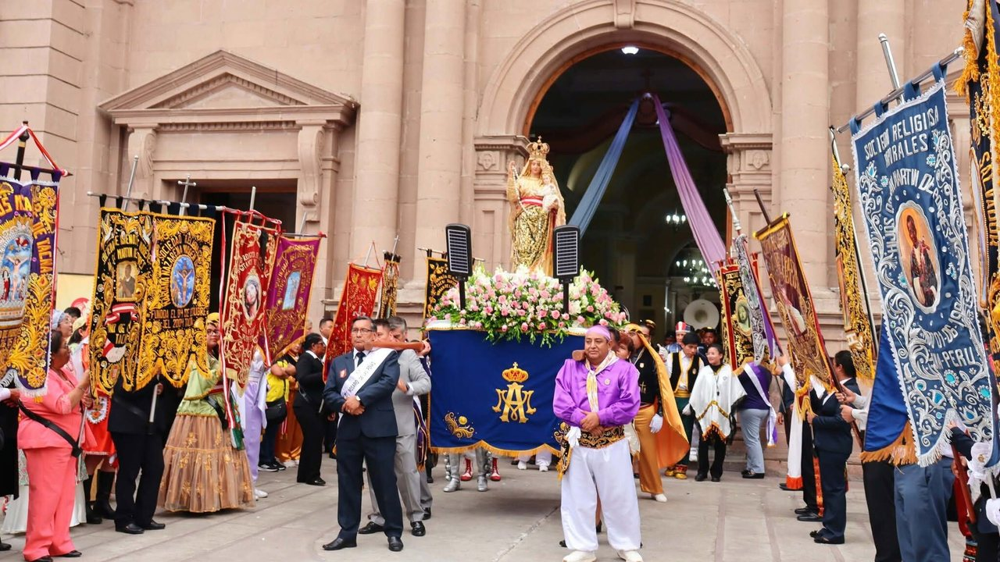
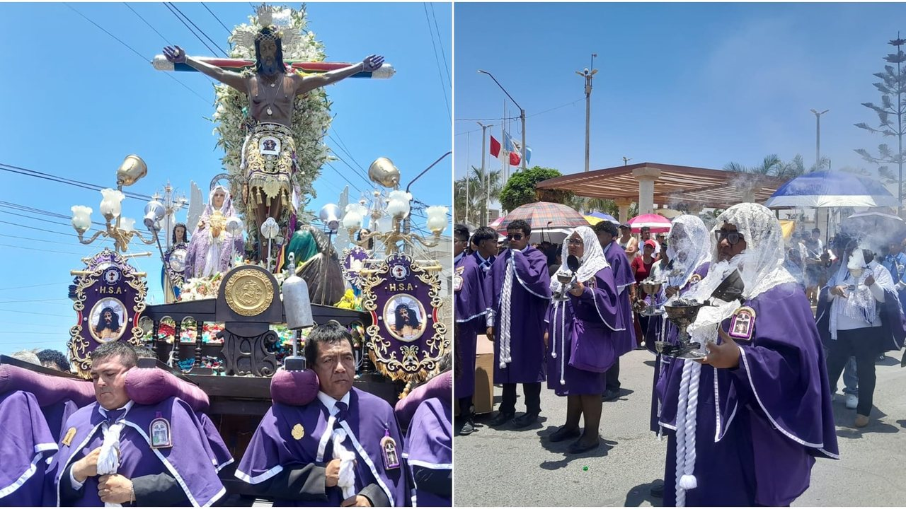

Florcita Polo declaró que Luiggi Yarasca la insultaba llamándola “bruta” y la trataba como una mujer de mal vivir, según el expediente de su denuncia al que tuvo acceso ‘América Hoy’. Florcita Polo “Luiggi siempre me insultó de bruta”, señaló.




Florcita Polo declaró que Luiggi Yarasca la insultaba llamándola “bruta” y la trataba como una mujer de mal vivir, según el expediente de su denuncia al que tuvo acceso ‘América Hoy’. Florcita Polo “Luiggi siempre me insultó de bruta”, señaló.
Un avión de LATAM preparado para transportar al papa León catorce permanece en la pista del aeropuerto durante los actos previos a su recorrido por Perú. Un avión de LATAM Airlines acondicionado para los traslados del papa León catorce permanece en la pista de aterrizaje durante su visita oficial a Perú.
Esto advierte la Marina de Guerra El fenómeno alcanzará las zonas norte, centro y sur del país, con variaciones según la ubicación de cada playa. Los oleajes anómalos continuarán afectando el litoral peruano durante los próximos días, según el pronóstico de la Dirección de Hidrografía y Navegación (DHN) de la Marina de Guerra del Perú.
A través de Lima Digital, una aplicación gratuita de la Municipalidad Metropolitana de Lima, los vecinos pueden comunicar información sobre hechos delictivos para facilitar su atención por parte de las instancias correspondientes.
Crear aplicaciones, analizar datos y optimizar los procesos de un negocio son algunas de las capacidades que hoy demandan las empresas en un mercado laboral cada vez más digitalizado. Ambas carreras tienen una duración de tres años y cuatro meses e integran conocimientos tecnológicos con su aplicación en el entorno empresarial.
Lluvias y activación de quebradas en Perú HOY: regiones afectadas, últimas noticias y pronósticos del Senamhi Hortalizas y pescados subieron más de 23 por ciento de precio en un año en Lima, ¿qué explica el alza?
La Catedral de Tacna se convirtió en el escenario de una colorida manifestación de música, danza y oración durante la celebración del XXIV Encuentro Diocesano del Bailarín Religioso. Esta jornada festiva se conmemora de manera oficial cada segundo domingo de noviembre desde el año 2003 en la Diócesis de Tacna y Moquegua.
Las presiones derivadas del servicio de la deuda continuaron siendo intensas en un contexto de elevadas tasas de interés a nivel mundial.
Rossy War estrena “Prisionera” junto a su hija Kat Mauri y anuncia gira por Colombia Miranda! y Lali Espósito llegan al Perú con su gira “BOM” La “Baladista de América” brindará hoy un concierto en Piura La cantante peruana presentó una colaboración que fusiona tecnocumbia y lambada como parte de su proyecto musical “Mi Puerto”.
Cada edición dura menos de dos minutos. En la web tienes el resumen de cada historia y el enlace directo al medio original para leerla completa.
Conoce Olfatecho →